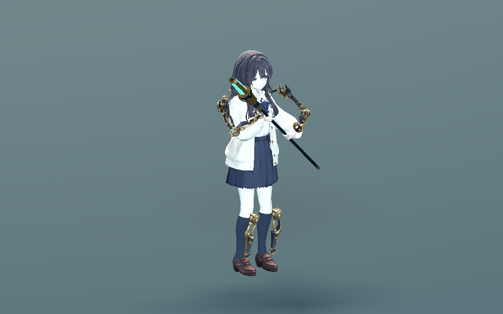
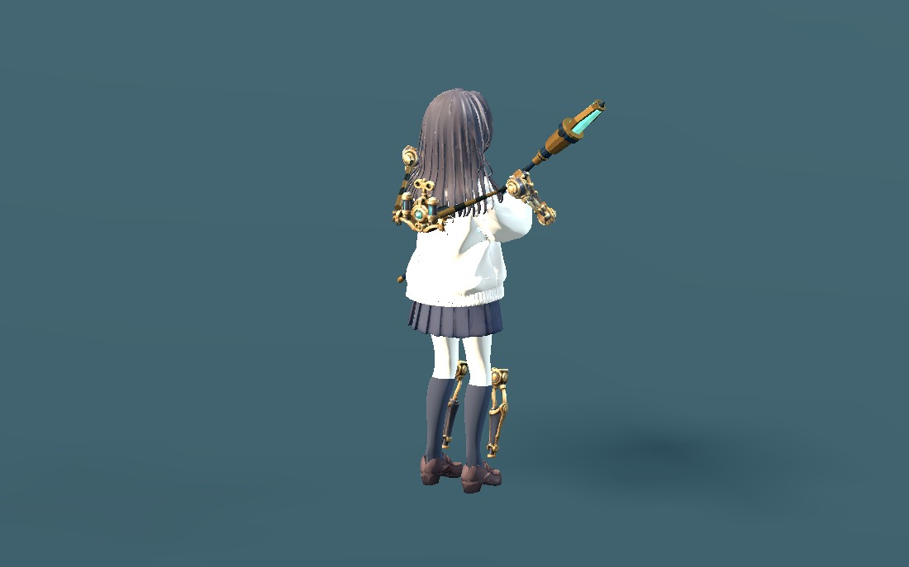
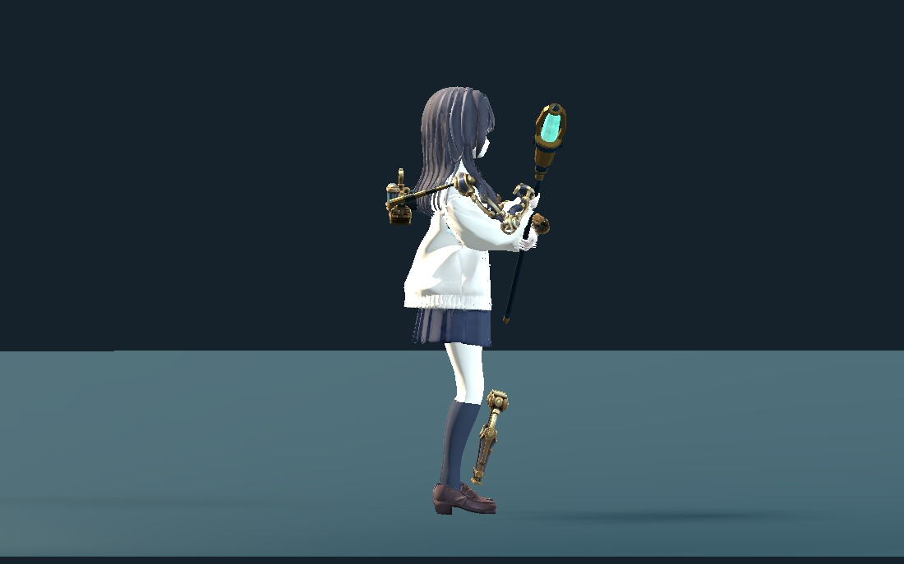
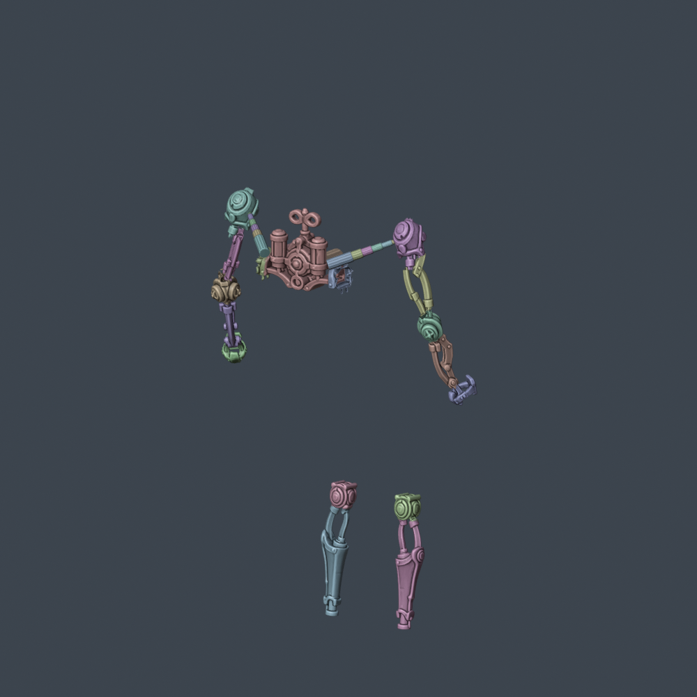
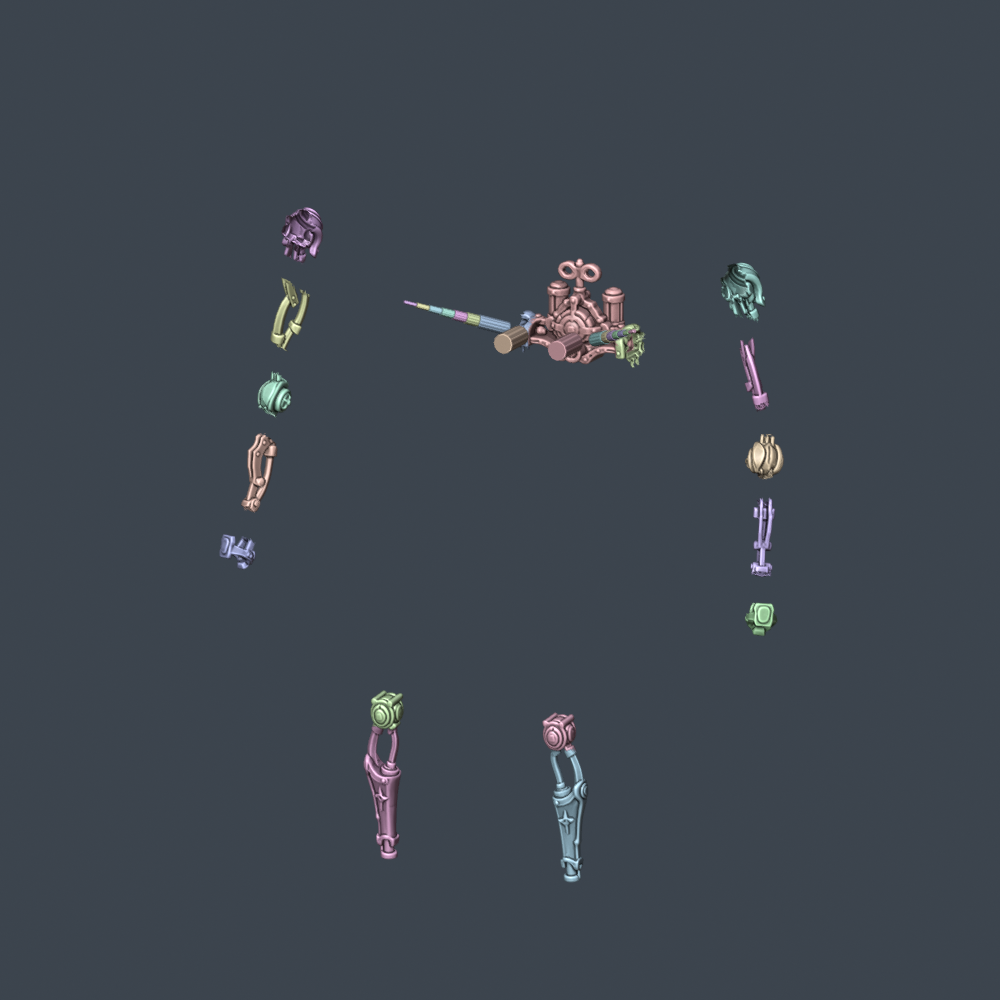
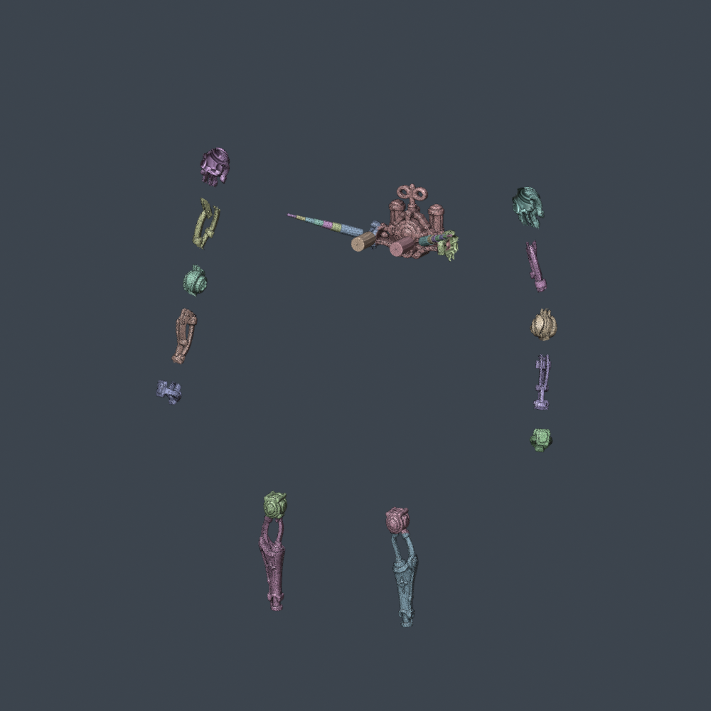

WITCH / EQUIPMENT STUDY 03
외골격 — 부품 분할과 착용 리그
등 동력부는 등 뒤를 향하고, 어깨 덮개는 팔 바깥쪽을 향하도록 따로 맞췄습니다. 기존 캐릭터의 움직임에 보조 리그를 연결한 첫 착용 시안입니다.
33개 강체 부품34개 보조 본79,242 삼각형평상복 / 변신복 · 8개 모션
Godot 실제 렌더 · 기존 모션의 원래 클립 길이

앞쪽 사선 — 어깨·팔꿈치·손목
뒤쪽 사선 — 등 동력부와 어깨 연결대신규 스킬 발동은 아직 연결하지 않았습니다. 이 화면은 장착 리그와 기존 동작의 호환을 보는 검토용입니다. 점프는 포즈, 쓰러짐은 기존 클립 자체를 재생합니다.
측면 배치와 실제 표시 크기

등 동력부를 뒤에 배치하고, 첫 피팅보다 몸 쪽으로 5.5cm 당겼습니다.
부품 식별색 — 실제 황동·청록 재질은 위 모션 화면에서 확인할 수 있습니다.1280×800, 선택된 1.75배 카메라 기준. 아래 그림은 CSS 축소 없이 표시되며 좁은 창에서는 가로로 스크롤됩니다.
부품과 관절

원본 17개 부품 + 어깨 연결대 14개 + 등 지지대 2개
원본 78,474개 면과 UV를 보존한 분할. 새 수작업 리토폴로지는 아닙니다.등·어깨·위팔·팔꿈치·아래팔·손목·무릎·정강이가 독립 부품입니다. 금속은 한 본에 100% 가중치로 묶었으며, 연결대는 길이를 늘리는 대신 7단 부품이 서로 미끄러집니다. 좌우 팔의 굽힘 방향을 고정해 비틀림 중 연결대가 뒤집히던 문제도 고쳤습니다.
현재 남은 피팅 작업
손목 고리와 소매의 작은 교차가 남고, 팔을 몸 안쪽으로 크게 돌리는 공격·캐스팅에서는 어깨와 케이프가 겹칩니다. 총 297 / 400 자세에서 의상과의 삼각형 교차가 검출됐습니다. 이 수치는 관통 깊이가 아니라 교차가 있는 자세 수입니다.
의상 전용 커프 여유와 어깨 회전 보정이 다음 피팅 대상입니다. 머리카락·맨몸·지면·부품 사이의 실시간 충돌, 스킬 조립 연출과 최종 경량화는 이번 검증 범위에 포함하지 않습니다.
파일과 검증 범위
- 원본 Tripo v2, 현재 캐릭터의 107개 본과 게임 스크립트는 보존했습니다.
- Blender 저장본·GLB 재반입의 메시/가중치 검사, 원본 면·UV 보존 검사를 통과했습니다. UV 이음 중복과 원본 내부 면 경고는 기록에 남겼습니다.
- 400개 장착 자세, 추가 800개 키 샘플, 1,928개 연속 자세를 검사했습니다. 대기·달리기 루프 끝점도 확인했습니다.
- 편집용 Blender에는 본체·외골격·헤어가 함께 재생되는 8개 모션 NLA 목록이 있습니다. Space로 재생하고 OUTFIT 컬렉션으로 의상을 전환합니다.